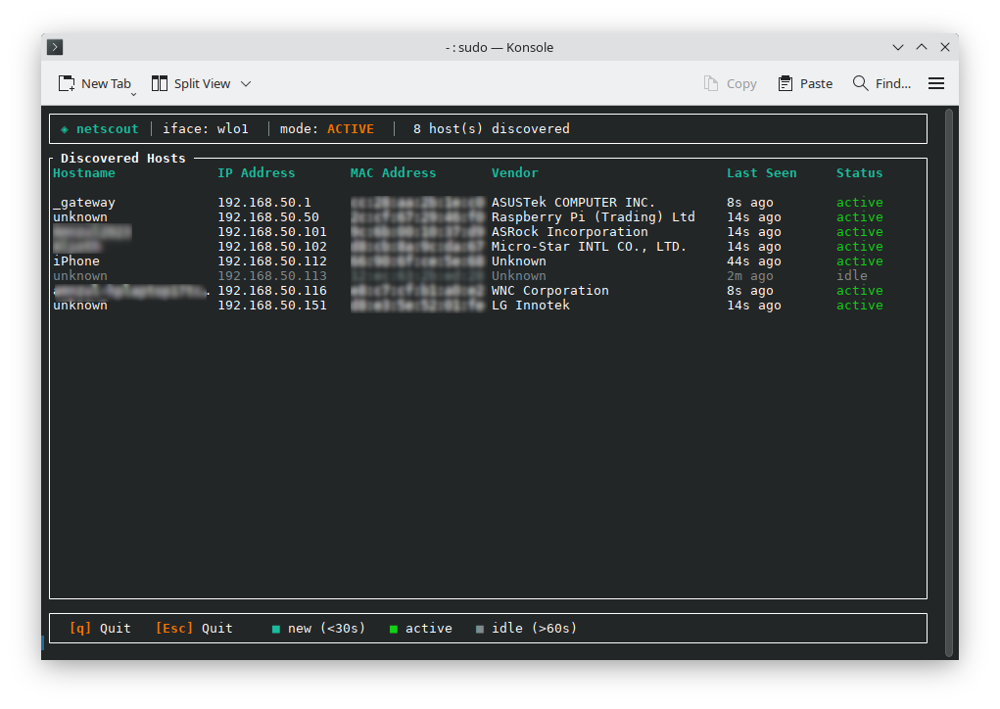
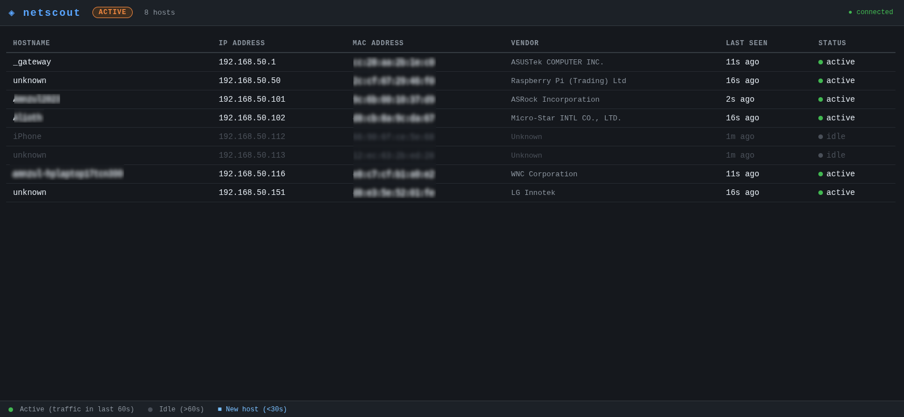

Building a Linux Network Scanner with Claude
After experimenting with Claude to build several applications, I wanted to try something that presented a different kind of challenge. I had never programmed in Rust before, so I decided to see what would happen if I used Claude to build a useful application in a language I didn't know.
The project became netscout, a Linux network scanner designed to discover devices on my local network and display information about them in a live-updating interface.
Terminal UI

Web Dashboard

netscout monitors a local network and identifies devices it discovers. It displays useful information such as hostnames, IP addresses, MAC addresses, and hardware vendors.
Choosing Rust was intentional. I wanted to find out whether unfamiliarity with a programming language would become a significant barrier when working with an AI coding assistant.
It turned out that it wasn't.
I could describe the functionality I wanted, have Claude generate the implementation, compile and test it, and then return to Claude with problems or changes. When I encountered Rust-specific concepts, I could ask Claude to explain them or modify the code rather than having to stop the project and first become proficient in Rust.
The project was another example of how I have been using AI-assisted development as an iterative process. I didn't start with a complete design or a detailed understanding of how every component would work.
Instead, I started with a goal and gradually refined the application. Claude helped translate those requirements into Rust, while testing the application revealed new things I wanted to change or improve.
The finished program runs as a Linux application and can operate from the terminal, including over an SSH connection. It can also optionally provide a web interface for viewing the network remotely.
This project reinforced something I had already begun to discover through my earlier vibe-coding experiments: knowing how to program is still valuable, but AI changes how that knowledge can be applied.
I didn't need to know Rust syntax before starting the project. What I needed was enough technical understanding to describe the problem, recognize whether the solution made sense, test the application, and identify when something wasn't working correctly.
Vibe coding didn't make Rust disappear. It gave me a way to work productively with Rust before I knew the language. Instead of learning the language first and then building something, I learned about the language while building something.
netscout was a particularly interesting experiment because it moved my AI-assisted programming beyond simple scripts and into a more substantial systems-oriented application.
More importantly, it challenged one of my assumptions about programming: that not knowing a language necessarily means you can't build something useful with it. With an AI coding assistant acting as a knowledgeable collaborator, the barrier was much lower than I expected.
I still wouldn't consider myself a Rust programmer. But I now know that lack of experience with a particular language doesn't necessarily have to prevent me from exploring what can be built with it.
netscout is available to download including the source code on my Github.